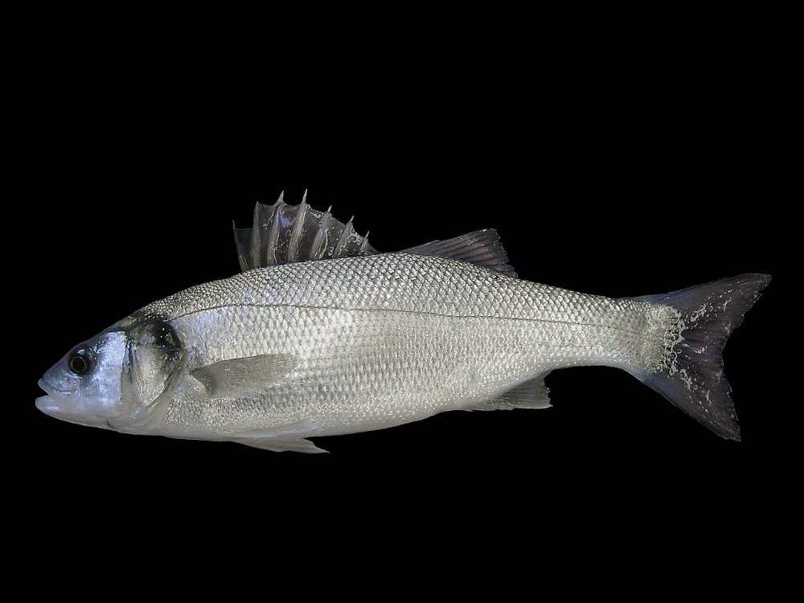
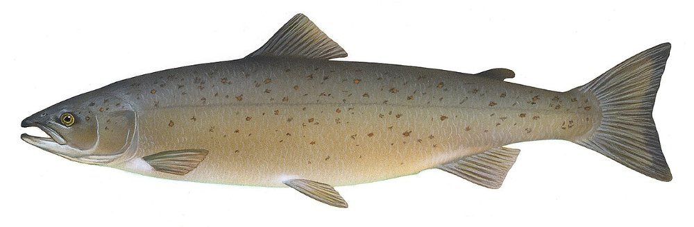

Where we are
Two curves that overlap


Week 3 gave us one curve per class: how lightness spreads for sea bass and for salmon.
The curves overlap. Some salmon are light and some sea bass are dark. Every rule will make mistakes.
This week: where should the line go? First so that we make the fewest mistakes, then so that mistakes cost the least.